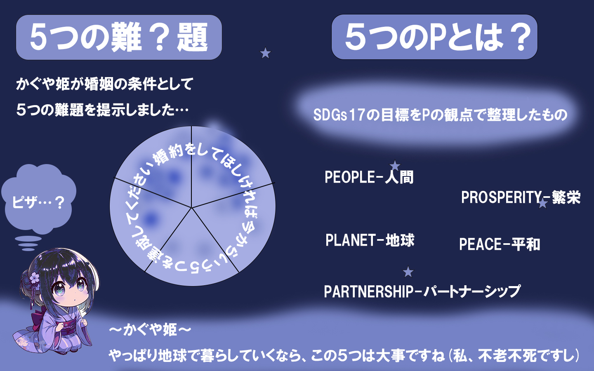
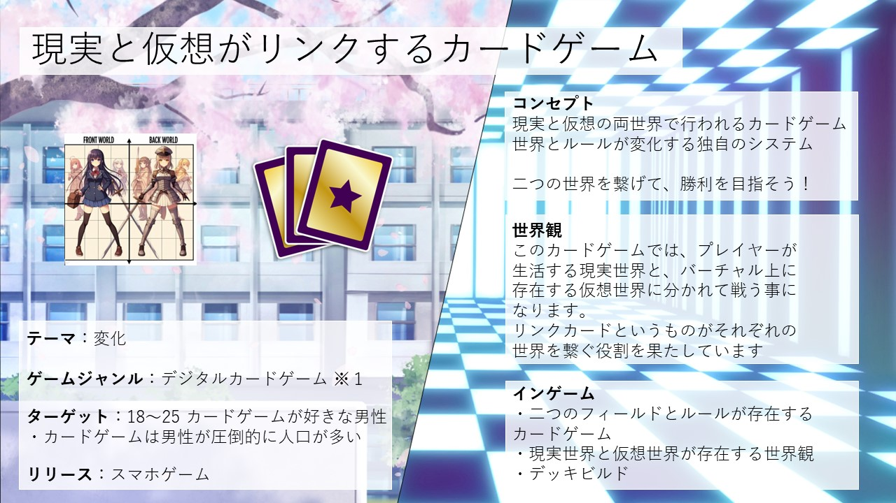

作品のタイトル2
作品の説明や詳細な情報などをここに追加します。
AIニュースキャスター
大学のチーム実習で行った、ChatGptを利用したニュースアプリです。その中で企画とWebデザインを担当し、実際に使用される場面を想定して落ち着いたシンプルなスタイルで作成しました。
トワイライトドーン
ファンタジー×終末世界をテーマにしたTRPGシステムです。
ファンタジーならではの魔法や生物から、終末世界の原因となった「災害」によるアクシデントを乗り越える要素などが存在しています。
作品のタイトル2
作品の説明や詳細な情報などをここに追加します。